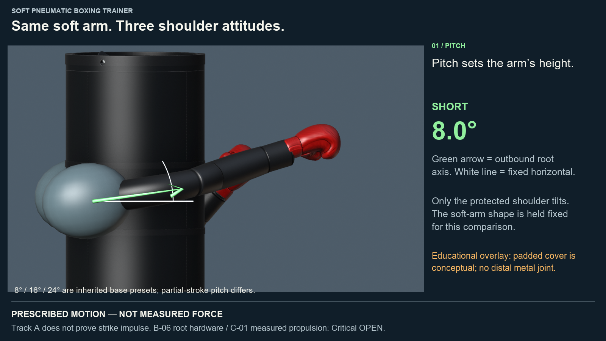
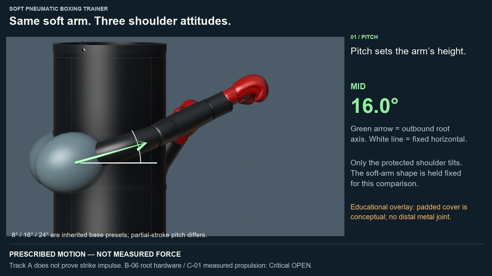
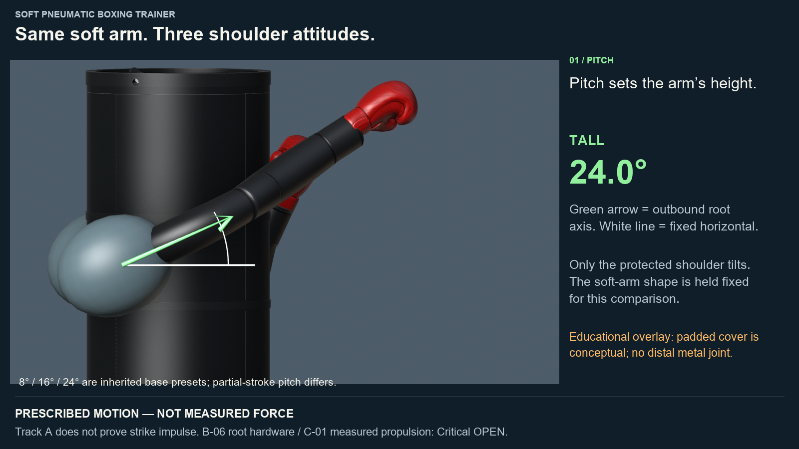
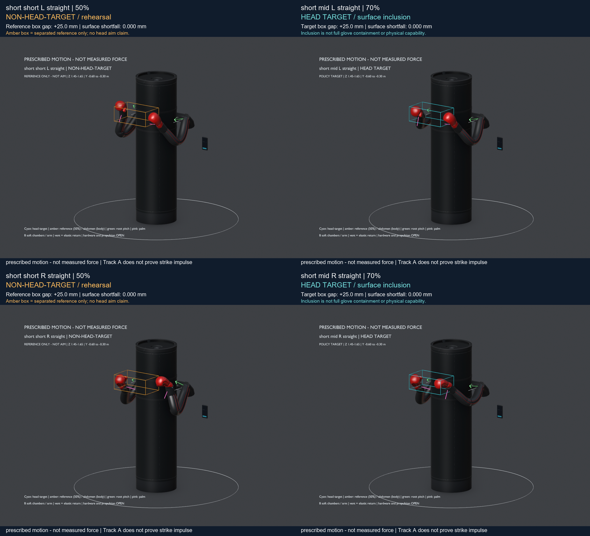
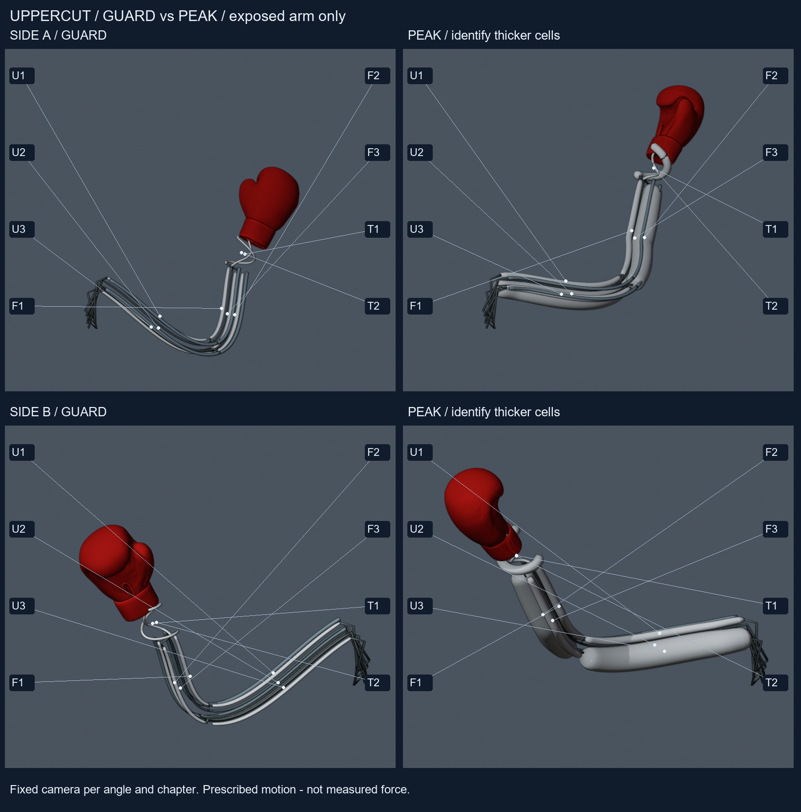
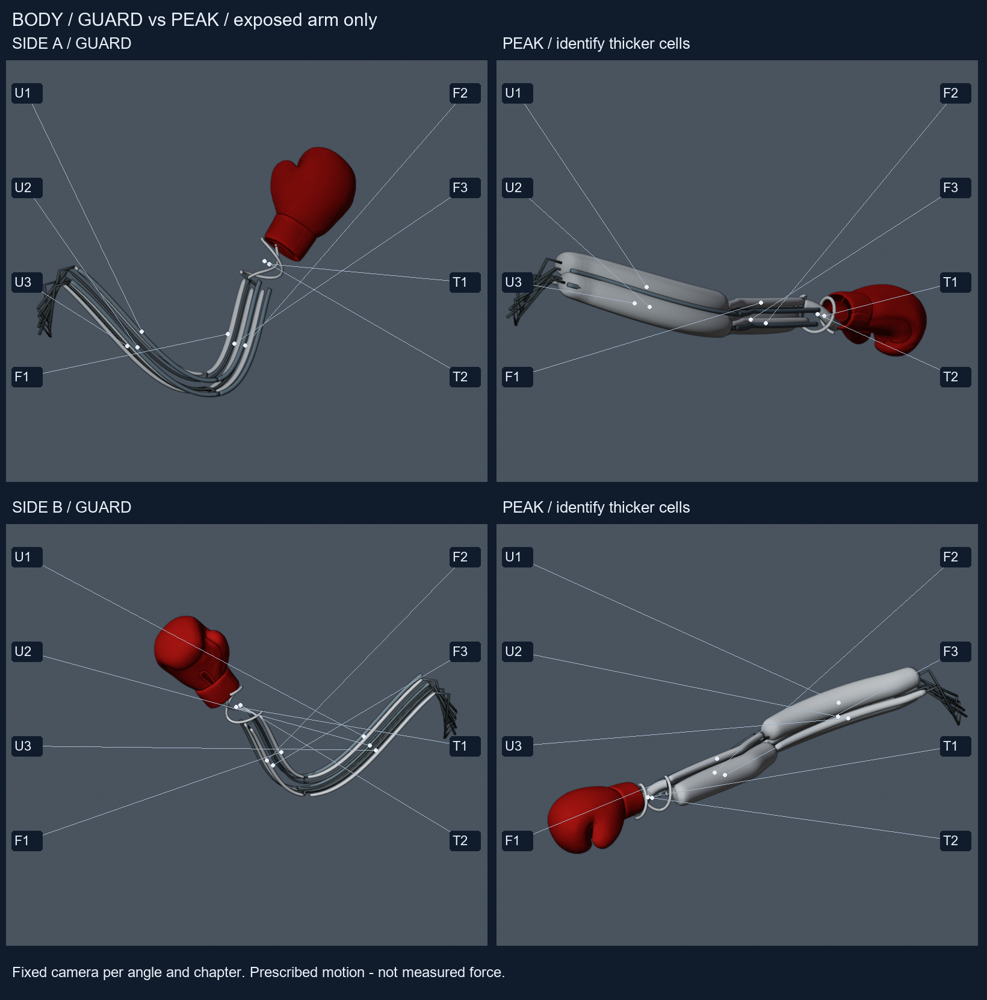

Head yaw live-USB path (ACCEPTED-A — digital Track A)
Pass n3-head-yaw-live-usb-path READY 2026-09-21 09:56 ET on the accepted head-yaw-v1 bridge. Lead disposition ACCEPTED-A (digital Track A). --camera N fails fast; the clip remains the CI proof. Inherited film is ACCEPTED-A evidence, not a remake. HY-02 stays OPEN.
INDEX ·
READY_FOR_OLA ·
ENGINEERING_ASSESSMENT (ACCEPTED-A) ·
Elias live-USB ICD ·
OLA_INTEGRATE live USB ·
Elias path (ACCEPTED-A) ·
Ismael soft physics (ACCEPTED-A paper) ·
BUILD_INTENT_BOM.
History: n3-head-track-yaw-bridge (prior digital packet).


HY-03 yaw mapping freeze (ACCEPTED-A — digital Track A)
Pass n3-hy03-yaw-mapping-freeze READY 2026-09-21 14:03 ET. Lead disposition ACCEPTED-A (paper support) plus Lead Track A freeze (OLA_INTEGRATE_ELIAS_HY03_2026-09-21.md). Label: Lead Track A freeze — not measured hardware limits / product bars. This packet has no film or stills.
INDEX ·
READY_FOR_OLA ·
HY-03 freeze note ·
Elias HY-03 support ·
OLA_INTEGRATE HY-03.
HY-02 stays OPEN.
01 — Notice
02 — Architecture freeze
U/F/T colors and bar emphasis are uncalibrated pedagogy — not pressure, strain, flow, duty cycle, or valve commands.
03 — Current baseline
Live packets, one home. Older day packets stay linked under History; they are not competing front doors.
| Packet | What it is | Role on this page |
|---|---|---|
| n3-standoff-pitch-policy | Reach / height / body atlas with Option A strike-dependent stand-off and coupled partial pitch. | Policy film atlas_review.mp4; RH-01 disposition. |
| n3-af01b-exposed-arm-swell-2 | AF-01b remake: dual-angle exposed-arm geometric swell with constant-neutral cells; board-free blind clip. | Films exposed_blind_review.mp4 + airflow_review.mp4; AF-01b CLOSED-A. |
| n3-rh02-partial-extension | RH-02: six 50% NON-HEAD-TARGET rehearsals + amber references; six 70% head surface+height retained. | Partial sheets partial_*.png; RH-02 CLOSED-A (scoped policy). |
| n3-head-yaw-live-usb-path | Live USB path slim on the accepted head-yaw-v1 bridge (digital Track A). --camera N fail-fast; clip is the CI proof. ACCEPTED-A. |
Film head_yaw_review.mp4 (inherited ACCEPTED-A evidence); assessment ACCEPTED-A. |
| n3-hy03-yaw-mapping-freeze | HY-03 Lead Track A freeze of the digital yaw map (sign +1, gain 30, clamp ±30, idle home_zero, watchdog 2 s). ACCEPTED-A (paper support). Not measured hardware limits. |
INDEX and freeze note. No film in this packet. HY-02 stays OPEN. |
04 — Visual review
Use speed controls when the browser allows; native video controls always work. Films are prescribed SE(3) / illustrative cues — not measured force.
Reach / stand-off / pitch (Option A)
docs/engineering/B06_OPTION_B_INTERFACE_FREEZE.md (signal pitch_lock_engaged).
Pitch / height pedagogy (ACCEPTED-A)
Prescribed motion — not measured force. Short/mid/tall root pitch; separate yaw and continuum chapters; RH-02 reminder.



Partial extension (RH-02)
Amber = 50% reference only (non-head). Cyan = 70% head-target surface inclusion. Scrub stills; no policy film this pass.



Exposed-arm swell (AF-01b-2) — airflow
Prefer the blind clip first (no answer captions). Scrub GUARD→HOLD if continuous playback understates silhouette change.
Dual-angle guard / peak stills (AF-01b-2)




If a media file fails to load, open via Start_Review.ps1 (port 8766) from the checkout that holds the packet media folders.
05 — Status table
Disposition for Michael's everyday home. Pitch pedagogy ACCEPTED-A. Head yaw live-USB path ACCEPTED-A (digital Track A; n3-head-yaw-live-usb-path). HY-03 yaw mapping freeze ACCEPTED-A (paper support; n3-hy03-yaw-mapping-freeze). Soft virtual physics ACCEPTED-A paper. Executing BOM/supplier scout + Option B freeze (pitch_lock_engaged).
| ID | Status | Plain meaning |
|---|---|---|
| RH-01 | policy ACCEPT | Option A stand-off / pitch policy accepted for Track A review (closer boxes; no lengthening). Not a physical reach qualification. |
| AF-01 | CLOSED-A | B2 film presents visible inflation pedagogy with prescribed bend. Closed for visualization / review presentation only. |
| AF-01b | CLOSED-A | Exposed-arm geometric swell accepted (dual-angle stills + freeze-frames; constant-neutral cells). Not packaging / P-V / System ID. Occlusion residual AF-01b-occ remains Medium. |
| RH-02 | queued | Partial-stroke aim residual — live NEXT_PROMPT n3-rh02-partial-extension. |
| C-01 | Critical OPEN | No measured pressure-to-motion-to-contact chain. Track A cannot close strike impulse. |
| B-06 | Critical OPEN | Root / bearing / hub / pitch stage incomplete. DFMEA starter sketch updated 21 Sep (paper only). Film pedagogy queued; Critical remains OPEN — no invented ratings. |
06 — Production readiness checklist
Parallel workstreams are allowed. Closed-A = Track A visualization / policy only. Critical items need measured hardware before consumer or production claims. Half/partial punches are optional training modes; max extension remains the normal head-punch case.
| Stream | Status | What “done” means | Owner / gate |
|---|---|---|---|
| Track A digital twin (reach, pitch, airflow pedagogy, RH-02, head→yaw) | CLOSED-A pieces | Architecture + aim rules + teaching films understandable. | Ola / Astra |
| Pitch / height pedagogy films | CLOSED-A | Visible short/mid/tall root pitch on START_HERE. | n3-b06-pitch-height-pedagogy ACCEPTED-A |
| Head yaw live-USB path | CLOSED-A | Digital Track A head L/R → carrier yaw. USB fail-fast plus clip CI. Inherited film on Pages. HY-02 remains OPEN. | n3-head-yaw-live-usb-path ACCEPTED-A |
| HY-03 yaw mapping freeze | CLOSED-A | Lead Track A digital map locked (sign +1, gain 30, clamp ±30, idle home_zero, watchdog 2 s). Not measured hardware limits. No film in the packet. | n3-hy03-yaw-mapping-freeze ACCEPTED-A |
| Soft virtual arm physics (paper) | CLOSED-A paper | Ismael DESIGN ESTIMATE soft continuum path; not Blender soft-body product close. | ISMAEL_VIRTUAL_SOFT_ARM_PHYSICS ACCEPTED-A paper |
| B-06 shoulder root / pitch hardware | Critical OPEN | CAD + DFMEA + strength cases + prototype fixture (paper DFMEA starter exists). | Ola paper; Stephen before fab |
| C-01 / Track B System ID | Critical OPEN | Measured P→strain→bend→contact coupons. | Plan on disk; Stephen before spend |
| Safety envelope (vent, pinch, limp, E-stop, proximity) | OPEN | Hazard register closed with mitigations + tests. | Ola + safety review |
| ~200 lb bag support structure | OPEN | Analyzed concealed support, not model-only. | Mech hire / Ola brief |
| Closed-loop controls + sensors | OPEN | Not scripted Blender motion. | Controls seat |
| CV / live camera → virtual twin | OPEN (planned) | Physical camera feeds twin for train/test; interfaces + acceptance tests. | CV specialist; Ola ICD |
| Durability / wear parts | OPEN | Cycle life, leaks, replaceable covers measured. | Track B + mech |
| Production CAD / BOM / DFM / suppliers | OPEN | Release pack for pilot build. | After EV evidence |
| Cert / compliance + pilot | OPEN | Jurisdiction path + field units. | Eta / Stephen / counsel as needed |
| Human seats (hire / contract) | NO-GO $0 | HUMAN paid seats: Stephen NO-GO $0. GROK BOT peers LIVE: Ismael (Soft Robotics Engineer) + Elias (Controls & Perception Engineer) — draft under Ola Lead disposition; no Critical/NEXT without Ola. Keep Track A Codex. | Eta · Art · Courtland · Stephen |
| Snowflake training corpus (camera→twin metadata/labels) | opportunity | Schema after Michael approve; Cynthia brief then Ibrahim ingest. No invented warehouse packs. | Michael · Cynthia · Ibrahim |
Consumer-ready = Critical safety + C-01 + B-06 + controls closed with evidence. Production = that plus DFM/BOM/pilot. Films alone never close those gates.
07 — Plain-language glossary
| Term | Everyday meaning | Why it matters here |
|---|---|---|
| Track A | Digital model + review films so the design is understandable. | Proves the story of shape and motion — not punch power. |
| Option A | Closer stand-off boxes + coupled partial pitch instead of lengthening the soft arm. | RH-01 policy path now on this front door. |
| RH-01 / RH-02 | Max reach/stand-off policy vs partial-stroke aim rules. | Both CLOSED-A for Track A; 50% head capability remains unavailable. |
| AF-01 / AF-01b | Board swell pedagogy / exposed-arm geometric swell. | Both CLOSED-A for Track A films; physical P-V and packaging still open. |
| CLOSED-A | Closed for this visualization / model-audit purpose only. | Not "ready to manufacture" or "safe in contact." |
| U / F / T | Upper, forearm, and soft-torsion wrist chamber groups. | Eight soft chambers per arm; cues are qualitative. |
| C-01 / B-06 | Missing measured impact chain / incomplete root structure. | Both remain Critical OPEN; films cannot close them. |
| Architecture freeze | Soft air fabric arms, fixed bag, rotating shoulders only. | Stops quiet return to rigid sticks or metal distal hardware. |
08 — Deep links
- n3-standoff-pitch-policy INDEX
- REACH_POLICY / .md
- REACH_VERDICT
- Standoff EXECUTIVE_REVIEW
- Standoff DEFECT_REGISTER
- n3-rh02-partial-extension INDEX
- RH02_POLICY / .md
- Assessment: RH-02 (CLOSED-A)
- n3-af01b-exposed-arm-swell-2 INDEX
- AIRFLOW_PEDAGOGY / .md
- AF-01b-2 EXECUTIVE_REVIEW
- Assessment: AF-01b-2 (CLOSED-A)
- n3-head-yaw-live-usb-path INDEX
- READY_FOR_OLA / .md
- Assessment: head→yaw (ACCEPTED-A)
- Ola integrate — Elias presence + live USB (2026-09-21) · root copy
- Elias live-USB camera ↔ twin ICD interfaces
- n3-hy03-yaw-mapping-freeze INDEX
- HY-03 yaw mapping freeze note
- Elias HY-03 yaw mapping support
- Ola integrate — Elias HY-03 (2026-09-21) · root copy
- n3-airflow-bladder-bend-B2 INDEX (history)
- Assessment: N3 reach/height/body
- Assessment: N3 geometry delta
- Assessment: N2 Track A
- chats/NEXT_PROMPT.md (ready_for_astra · n3-b06-pitch-height-pedagogy)
09 — History (not competing homes)
Prior packets remain readable for lineage. Open them for context; do not treat them as the everyday front door.
- n3-head-track-yaw-bridge — prior digital Track A yaw packet (READY 2026-09-21 08:18:59 ET); not the everyday yaw front door
- n3-reach-height-body — prior reach/height/body atlas
- n3-af01b-exposed-arm-swell — first AF-01b FAIL (superseded by -2)
- n3-airflow-bladder-bend-B2 — AF-01 board CLOSED-A; AF-01b residual
- n3-airflow-bladder-bend — failed AF-01 film (superseded by B2)
- n3-geometry-delta — G-03/G-05 clearance delta
- START_HERE_N1_PRODUCT_DOSSIER.html — archived full N1 product dossier
- revision_n/START_HERE.html — older revision archive when present
10 — How to open
- Preferred: from the repo root on DESKTOP-P08972I run
Start_Review.ps1, then open
http://127.0.0.1:8766/START_HERE.html - Same-day copy (optional):
http://127.0.0.1:8766/reviews/2026-09-19/START_HERE.html - file:// fallback:
C:\Users\mfawe\OneDrive\Documents\GitHub\robotic-punching-bag\START_HERE.html
Some browsers restrict local video under file:// — use the local server if films do not play. - Pages (placeholder): https://myorglab-repos.github.io/astra-previews/ola/start-here/
Do not git push from this rebuild. Do not flip NEXT_PROMPT off awaiting_michael. Commit left to Michael / Ibrahim.
Engineering paper
Track B and B-06 drafts
Docs-only plans on disk (no lab spend yet):
- Track B System ID plan
- B-06 root / pitch hardware sketch (DFMEA starter, 21 Sep)
- Live camera → virtual twin ICD (train/test plan)
- Ismael Digital Track B prep
- Elias digital HIL session-enable stub (ACCEPTED-A)
- Elias CV synthetic dataset plan (ACCEPTED-A)
- B-06 Option B FEA scope
- Digital Track B prep
- Elias head-track → Blender carrier yaw path (ACCEPTED-A)
- Ismael virtual soft-arm physics (ACCEPTED-A paper / DESIGN ESTIMATE) — Soft ACCEPTED-A; BUILD_INTENT_BOM · Digital Track B prep (ENGINEERING_ASSESSMENT_ISMAEL_VIRTUAL_SOFT_PHYSICS* / VIRTUAL_VV / STACK_SYNC_2026-09-21 not on box SoR mirror — desktop CopyToBox unavailable this run)
- Elias twin-adapter signal table — includes
pitch_lock_engaged - Build-intent BOM
- n3-head-yaw-live-usb-path packet — READY 2026-09-21 09:56 ET; live USB path slim on
head-yaw-v1; ACCEPTED-A digital Track A · assessment - n3-hy03-yaw-mapping-freeze packet — READY 2026-09-21 14:03 ET; ACCEPTED-A (paper support) + Lead Track A freeze · freeze note · Elias support · Ola integrate
- Elias Controls & Perception ICD stub (ACCEPTED-A)
- Elias Controls & Perception draft packet (ACCEPTED-A)
- Controls inhibit / E-stop / limp ICD (ACCEPTED-A paper)
- Ismael Soft Robotics open-items v2 (ACCEPTED-A paper)
- Ismael soft-actuator inventory (ACCEPTED-A)
- Ismael soft-actuator feasibility/risk (ACCEPTED-A)
- Ola integrate — Elias presence + live USB (2026-09-21) · root copy
- Ola integrate — Ismael B-06 Option B (2026-09-21) · root copy
- Elias presence hardware path scout
- Elias live-USB camera ↔ twin ICD interfaces
- Ismael B-06 Option B path + BOM scout
- RH-02 partial-extension (CLOSED-A)